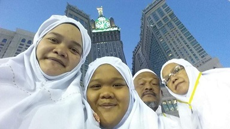
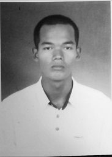
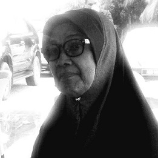
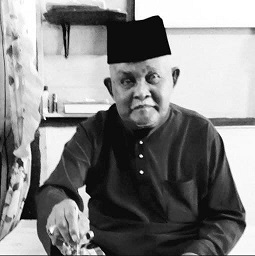
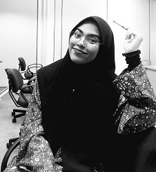

This websites for IMS456 |

My Happy Memories
| Performing umrah with the family On 19 December 2015, I had the opportunity to perform Umrah in Mecca and Medina with my parents and sister. This opportunity is very meaningful for me because it can be a very calm and extraordinary experience. My first feeling of seeing the Qibla of the Muslims, the Kaaba, seemed to disbelieve that it was already in front of my eyes. I learned a lot when I was there for 2 weeks. I learned the way of life of the Arabs and the different races there. Taste the delicious food and visit the historic place. One day, my dream is to bring all my family members together to perform Hajj or Umrah. InshaAllah. |
My Sad Memories
Loss of Loved Ones
| My Second Brother SHAHRUL HIZAM BIN SUFFAR RUDDIN I lost my brother in 2009. My brother has leukemia. He was a very nice brother and likes to joke with me. He loss was deeply felt by my entire family. | My Grandmother CHE TIMAH BINTI SAID I lost my grandmother in February 2018. My grandmother was a mother to my mother and an aunt to my father. While waiting for the decision to continue studying, I was given the trust and responsibility to take care of my grandmother in the hospital. My grandmother fell while doing work and her condition got worse. I was the last person my grandmother saw before she left. The loss of my grandmother had a big effect on my life. |
| My Grandfather OMAR BIN SAID I lost my grandfather in February 2019. My grandfather was a relative of my late grandmother. My grandfather was the father of my father and the uncle of my mother. He had a wife who took care of him and was a stepmother to my father. My grandfather had heart disease and it got worse after his sister who was my grandmother had left. My father was given the responsibility to take care of my grandfather. When my grandfather was admitted to the hospital, I was given the responsibility to take care of him. My grandfather had died at his house in the morning before dawn. While my grandfather was still alive, he was a man who loved to tell me stories of the past. | My Best Friend NUR SYIFA IMANI I lost my best friend in September 2019. We were friends from kindergarten until elementary school. Although we rarely meet because of different educational places, she never forgot me and we will try to spend time and meet. She is a student of UiTM Machang, Kelantan. She had a serious road accident in Pasir Puteh, Kelantan. The accident involved four people and she was the only one who could not be saved.The last time we met was on Hari Raya Aidilfitri 2019. Lost of my best friend was very much felt as she was a very kind person to everyone, very devoted to her parents and had very big dreams. Berita Harian (15 September 2019) |
This websites for IMS456 |